Anleitung Faktura in Sanostat Evo
Download Anleitung Faktura
 Für den Download auf das Dokument klicken
Für den Download auf das Dokument klicken
Übersicht Inhalt
1.0 Ereignis / Einsatz / Patient
Ein Patient kann in Sanstat Evo fakturiert werden, sofern alle notwendigen Eingabefelder valide sind. Sanostat Evo prüft selbstständig, ob alle relevanten reps. definierten Eingabefelder korrekt ausgefüllt wurden.
Mit folgendem Symbol ( ) wird auf der Benutzeroberfläche sichtbar, ob die Eingaben korrekt sind. Sollten definierte Felder nicht korrekt oder fehlend befüllt sein, wird dies mit folgendem Symbol ( ) auf der Oberfläche gekennzeichnet.
 Sind alle notwendigen Felder korrekt befüllt, kann ein Patient in Sanostat Evo fakturiert werden.
Sind alle notwendigen Felder korrekt befüllt, kann ein Patient in Sanostat Evo fakturiert werden.
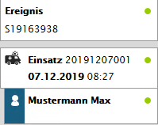
Auswahl der Rechnungsadresse
Die Rechnungsadresse kann entweder direkt definiert oder als abweichende Rechnungsadresse definiert werden.
2.1 Patientenadresse
Patientenadresse
Die Patientenadresse wird standardmässig für den Versand von Leistungsbelegen (LB) und aber auch für den Versand von dem Einzahlungsschein (ESR) verwendet.
Der Inhalt der "Zusatzzeile" kann (sofern für Kunde umgesetzt) als Inhalt über der Strasse in der Patientenadresse angezeigt werden.
Ist beim Ereignisort der Ereignisorttyp "Patientenadresse" ausgewählt, so wird diese Adresse automatisch auf den Patient übertragen und als Patientenadresse für die Faktura eingetragen. Eine Mutation ist jederzeit möglich.
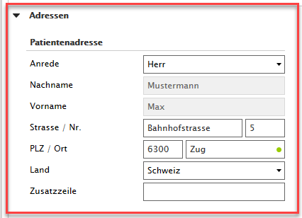
2.2 Abweichende Rechnungsadresse
Abweichende Rechnungsadresse
Für die Abweichende Rechnungsadresse muss auf dem Patienten / Adresse das Feld "Abweichende Rechnungsadresse" mit JA aktiviert werden.
Der Inhalt der "Zusatzzeile / Zusatzzeile 2" kann (sofern für Kunde umgesetzt) als Inhalt über der Strasse in der Abweichenden Rechnungsadresse angezeigt werden.
Wichtig beim Befüllen der Adressfelder ist, dass jeweils alle Pflichtfelder sowie die Anrede befüllt sind
Aktuell stehen 2 Typen (Abweichende Rechnungsadresse zur Verfügung. (Spital / Institution und sonstige)
Typen der Abweichenden Rechungsadresse
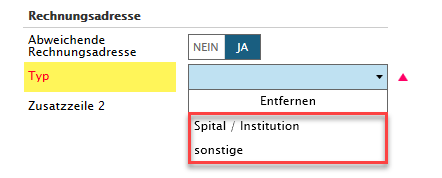
Wir die Abweichende Rechungsadresse ausgewählt so wir der Vorname und der Nachname von der Patientenadresse automatisch übernommen.
Anschliessend wird der Typ der Abweichenden Rechnungsadresse abgefragt.
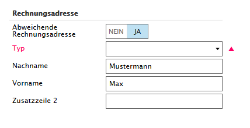
2.2.1 Abweichende Rechnungsadresse - Typ: Spital / Institution
Typ: Spital / Institution
Manuelle Suche des Spital / Institution
Adresse wird übernommen
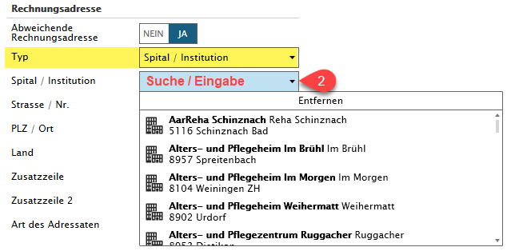 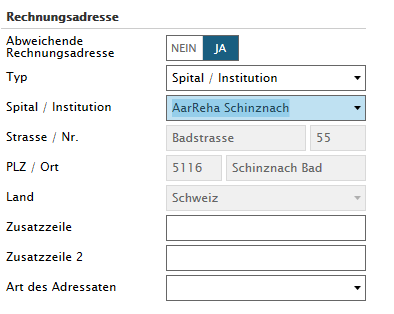
2.2.2 Abweichende Rechnungsadresse - Typ: sonstiges
Typ: sonstiges
1) Anrede (muss zwingend ausgewählt werder)
- Herr / Frau - Patientenadresse (Eltern, Beistand, Verwandte)
- Firma - Firmenadresse / Institutionen / Vereine welche nicht in der Spital / Institutionliste vorhanden sind
2) Strassse / Nr.
3) PLZ / ORT - wird die Postleitzahl eingetragen, erkennt Sanostat Evo automatisch mögliche Orte aus dem Ortsverzeichnis
4) opt. (falls für Kunde umgesetzt) Zusatzzeile - Inhalt wird in der Adresse über der Strasse angezeigt
5) Art des Adressaten (Eltern, Beistand, Verwandte) - diese Auswahl ist optional möglich
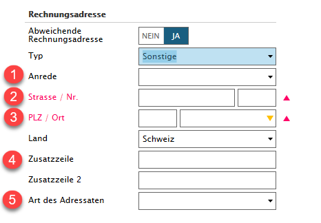
Beispiel für korrekte Firmenadresse / Verein / Institution (nicht in Spital / Institution - Liste vorhanden)
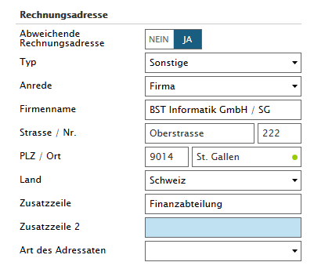
3. Patient abrechnen
Nachdem den Adresse korrekt ausgewählt wurde, Patientenadresse oder abweichende Rechnungsadresse, kann via dem Button Abrechnen der entsprechende Leistungsbeleg erstellt werden.
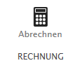
Nach dem Fakturieren, erscheint folgende Hinweismeldung rechts unten:
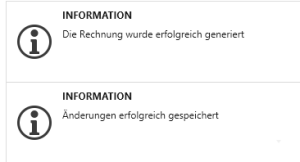
Nachdem die Rechnung erstellt wurde, wird diese unter dem Patient angereiht und angezeigt.
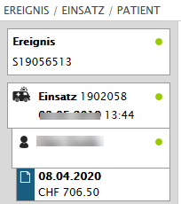
Anpassung der Statusse in Sanostat Evo:
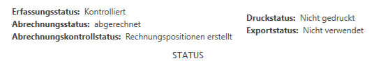
Die gerade erstellte Rechnung befindet sich nun im Abrechnungskontrollstatus: Rechnungsposition erstellt
3.1 Übersicht der Statusse
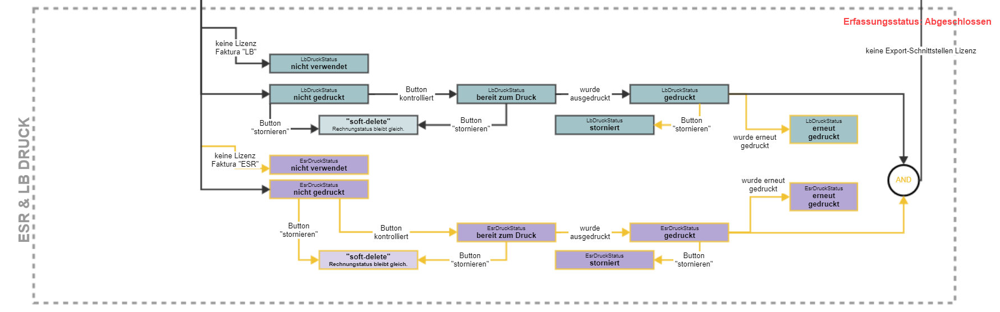
4. Faktura - Management
4.1 Verwalten von Leistungen
4.2 Stornieren / Löschen von erstellen Rechnungen
4.3 Vorschau von Leistungsbeleg (LB) und Einzahlungsschein (ESR)
In Sanostat Evo können nach dem Abrechnen (Erstellung der Rechnungspositionen) eines Patienten, weitere Leistungen manuell hinzugefügt werden. Hierzu wird die Rolle "Rechnungsverwaltung" benötigt.
Ist diese Rolle beim User aktiviert, so erscheint auf der Benutzeroberfläche ein Button "Verwalten"
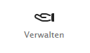
Über diesen Button (Verwalten) ist es möglich, manuell einzelne Leistungen hinzuzufügen. Ebenso können Preise / Mengen manuell mutiert werden.
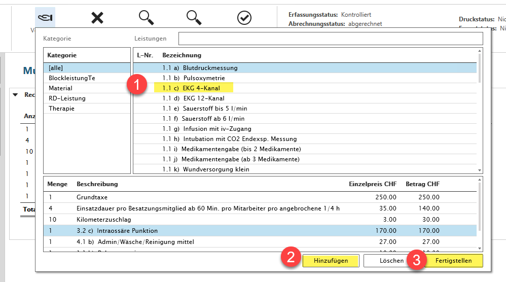
Rechnungen welche erstellt wurden, welche noch nicht kontrolliert und somit für den Export freigegeben wurden, können mittels dem "Stornieren" Button gelöscht (Soft-delete) resp. storniert werden.
Damit Rechnungen gelöscht resp. storniert werden können, ist die Rolle "Rechnungsverwaltung" notwendig.
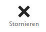
Über dieses Button ist es möglich, Rechnungen welche noch nicht als kontrolliert markiert wurden, zu löschen resp. zu stornieren.
Wir der Button "Stornieren" betätigt so erfolgt eine Meldung "Soll die Rechnung gelöscht werden" resp. storniert werden. Diese Meldung muss mit JA bestätigt werden, so wird die Rechnung gelöscht (Soft-delete) und die Statusse (Abrechnungsstatus) wird zurückgesetzt.
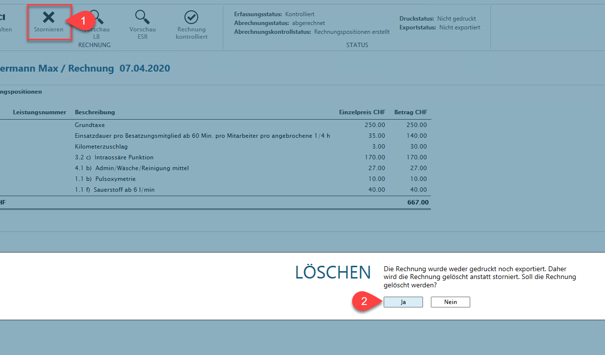
Statusse werden nach dem Stornieren zurückgesetzt.
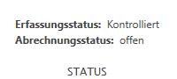
Ist eine Rechnung erstellt, so ist eine Vorschau des Leistungsbeleg und Einzahlungsschein (ESR) - sofern Lizenz vorhanden möglich.
Für die Vorschau des Leistungsbelegs und des Einzahlungsscheins (ESR) gibt es folgende Buttons:
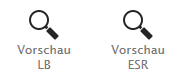
 Durch Wassermarken wird gekennzeichnet, dass eine Rechnung noch nicht kontrolliert wurde,
Durch Wassermarken wird gekennzeichnet, dass eine Rechnung noch nicht kontrolliert wurde,
Vorschau LB (Leistungsbeleg)
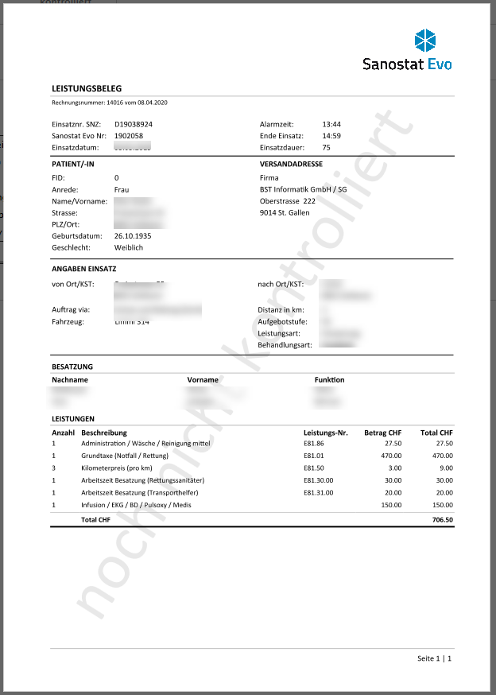
Vorschau Einzahlungsschein (ESR)
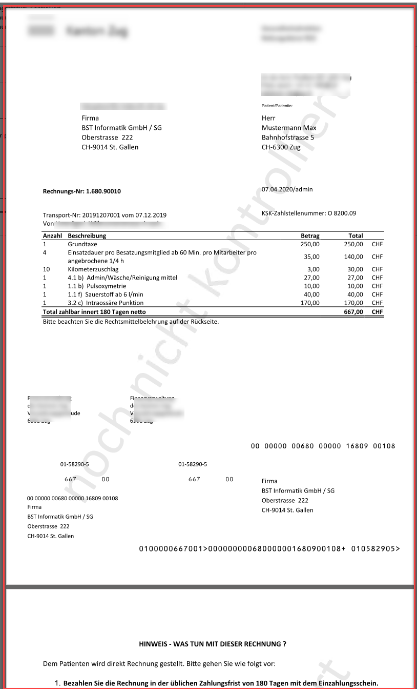
5. Rechnung freigeben für Druck/Export
Ist eine erstellte Rechnung fertig zusammengestellt und wurde kontrolliert, so muss diese Rechnung für den Druck / Export freigegeben werden (Export erfordert eine Exportschnittstelle, z.B. ALIS, Mailversand, ESR, ...)
Damit die Rechnung freigegeben werden kann, benötigt der User folgende Rollen: Rechnungskontrolle und Rechnungsexport.
Über den Button "Rechnung kontrolliert" wird die Rechnung als kontrolliert markiert und für den Druck / Export bereit gestellt.
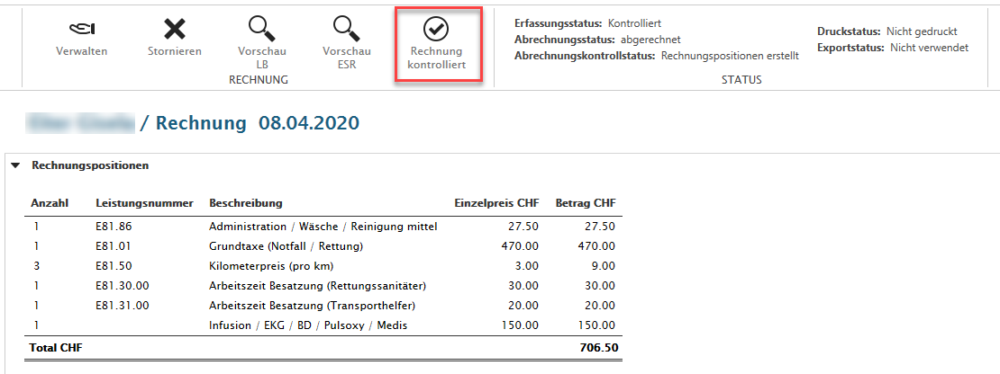
Nachdem die Rechnung kontrolliert wurde, ändern sich die Statusse und der Button "Rechnung kontrolliert" verschwindet.
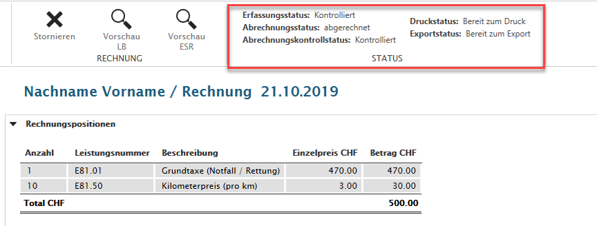
Nachdem der Export / Druck vollzogen ist, ändern sich die Statusse zu abgeschlossen und der Einsatz / Patient ist vollständig abgeschlossen.
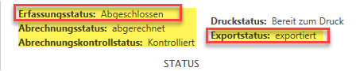